|
|
|
|
|
|
|
| 18 X3D Scenes | Scene Descriptions | |
|---|---|---|
| Figure 09.1 Spinning Cube Touch Sensor | A cube that spins when the cursor moves over it. Also see Figure 9.2 for comparison. | |
| 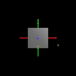 | Figure 09.1 Spinning Cube Touch Sensor With Axes | A cube that spins when the cursor moves over it, with coordinate axes superimposed to show X3D/VRML directions. Also see Figure 9.2 for comparison. |
| Figure 09.2 Spinning Cube Touch Sensor Clicked | A cube that spins when the viewer touches it. Also see Figure 9.1 for comparison. | |
| 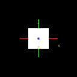 | Figure 09.2 Spinning Cube Touch Sensor Clicked With Axes | A cube that spins when the viewer touches it, with coordinate axes superimposed to show X3D/VRML directions. Also see Figure 9.1 for comparison. |
| 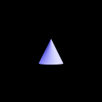 | Figure 09.3 Cone Plane Sensor | A Cone that translates in the vertical XY plane when the viewer drags it. Also see Figure 9.4 for comparison. |
| 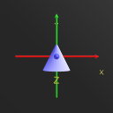 | Figure 09.3 Cone Plane Sensor With Axes | A Cone that translates in the vertical XY plane when the viewer drags it, with coordinate axes superimposed to show X3D/VRML directions. Also see Figure 9.4 for comparison. |
| 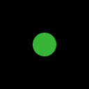 | Figure 09.4 Cone Plane Sensor Constrained | A cone that translates within a limited range of the XZ plane when the viewer drags it. Also see Figure 9.3 for comparison. |
| 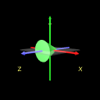 | Figure 09.4 Cone Plane Sensor Constrained With Axes | A cone that translates within a limited range of the XZ plane when the viewer drags it, with coordinate axes superimposed to show X3D/VRML directions. Also see Figure 9.3 for comparison. |
|
|
Figure 09.5 Four Stacking Blocks | Four stacking blocks, select and drag to see each of them. |
| 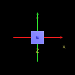 | Figure 09.5 Four Stacking Blocks With Axes | Four stacking blocks, select and drag to see each of them. Coordinate axes are superimposed to show X3D/VRML directions. |
| 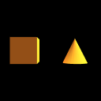 | Figure 09.6 Sphere Sensor | Two shapes that rotate when the viewer drags them, with coordinate axes superimposed to show X3D/VRML directions. |
| 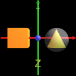 | Figure 09.6 Sphere Sensor With Axes | Two shapes that rotate when the viewer drags them, with coordinate axes superimposed to show X3D/VRML directions. |
|
|
Figure 09.7 Cylinder Sensor | Two shapes that rotate about an axis when the viewer drags them, with coordinate axes superimposed to show X3D/VRML directions. |
| 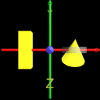 | Figure 09.7 Cylinder Sensor With Axes | Two shapes that rotate about an axis when the viewer drags them, with coordinate axes superimposed to show X3D/VRML directions. |
| Figure 09.8 Click Drag Touch Sensor Plane Sensor | Two shapes that rotate about an axis when the viewer drags them, with coordinate axes superimposed to show X3D/VRML directions. | |
| 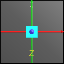 | Figure 09.8 Click Drag Touch Sensor Plane Sensor With Axes | A cube that spins when the cursor moves over it and translates when the cursor drags it, with coordinate axes superimposed to show X3D/VRML directions. |
| 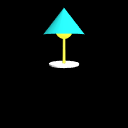 | Figure 09.9 Desk Lamp | A desk lamp with arm angles that can be adjusted using nested sensors. |
| 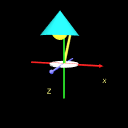 | Figure 09.9 Desk Lamp With Axes | A desk lamp with arm angles that can be adjusted using nested sensors, with coordinate axes superimposed to show X3D/VRML directions. |
Online at http://www.web3d.org/x3d/content/examples/Vrml2Sourcebook/Chapter09-SensingViewer
Master source code archive is under subversion control at
http://sourceforge.net/p/x3d/code/HEAD/tree/www.web3d.org/x3d/content/examples/Vrml2Sourcebook/Chapter09-SensingViewer
|
|
|
|
|
|
Also available: current and archived nightly builds and distributions of these examples, all published under an Open-Source License.
The X3D Resources: Examples page and Savage Developers Guide provide more information about the production of this archive.